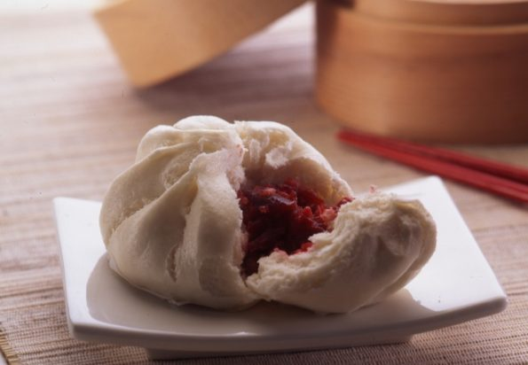

Char Siu Bao Filling

A no-fuss take on a classic BBQ pork filling
While by no means an authentic rendition, this quick-and-dirty char siu inspired bao
filling makes for a familiar dim sum taste without the hassle of preparing traditional
Chinese BBQ pork.
Ingredients
- 1/2 tsp five-spice powder
- 1 lb pork tenderloin
- 1 tbs canola oil
- 1 cup thinly sliced green onions
- 1/8 tsp natural red food coloring (optional)
- 3 tbs hoisin sauce
- 2 tbs rice vinegar
- 1 tbs low-sodium soy sauce
- 1 1/2 tsp honey
- 1 tsp minced fresh ginger
- 1 tsp minced garlic
- 1/4 tsp salt
Steps
- Evenly rub pork with five-spice seasoning and allow to sit.
- Coat a heavy grill pan in canola oil and heat over medium high heat. Add pork to pan:
cook 18 minutes or until a thermometer registers 155 degrees, turning pork occasionally.
Remove prok from pan, and let stand 15 minutes.
- Cut pork crosswise into thin slices; cut slices into thin strips. Place pork in a medium
bowl. Add onions and next 7 ingredients (through 1/4 teaspoon salt); stir well to combine.
Cover and refrigerate.
- Allow cooked pork to absorb moisture for at least one hour before filling bao dough and steaming.